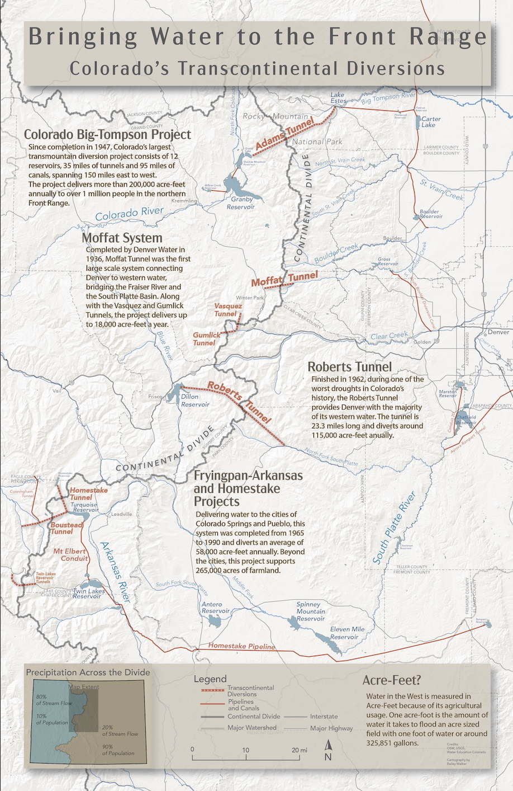
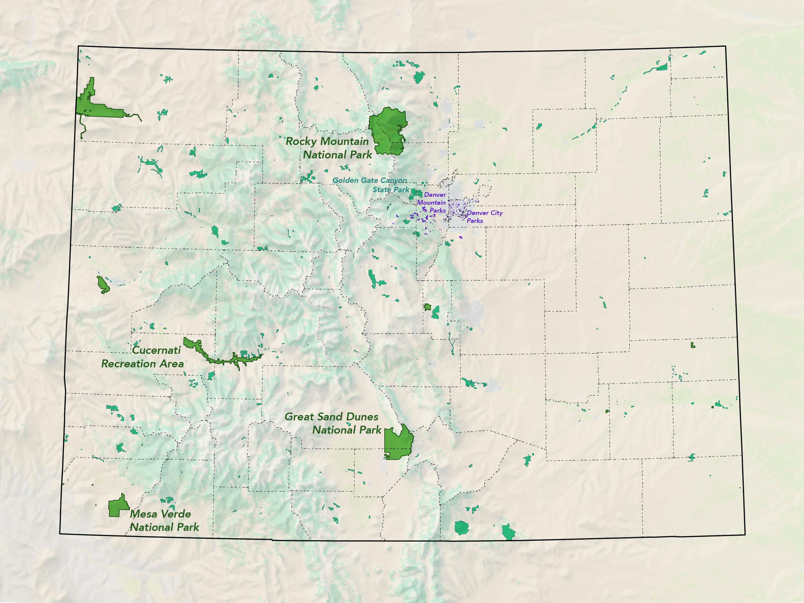

Maps and stories about people and place
I'm Bailey Walker, a geographer and educator working in cartography, GIS, and remote sensing. Here is a selection of my work.

Bringing Water to Colorado's Front Range
A transbasin water diversion map shown at the NACIS 2024 student map gallery.
CartographyDesign
Mapping Colorado's Parkland
A map created for the Denver Garden Club's garden show celebrating Colorado's 150th anniversary.
CartographyDesign
Google Earth Engine Apps
Interactive apps on environmental change and place, built with remote sensing.
Remote sensingWeb apps